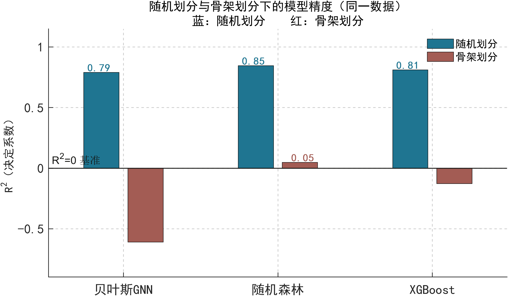
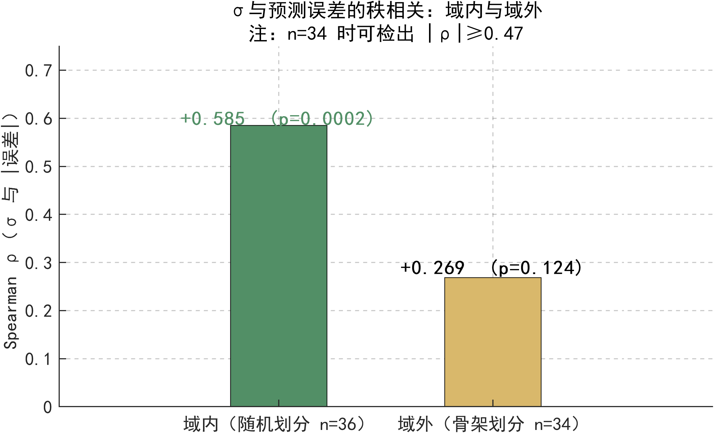
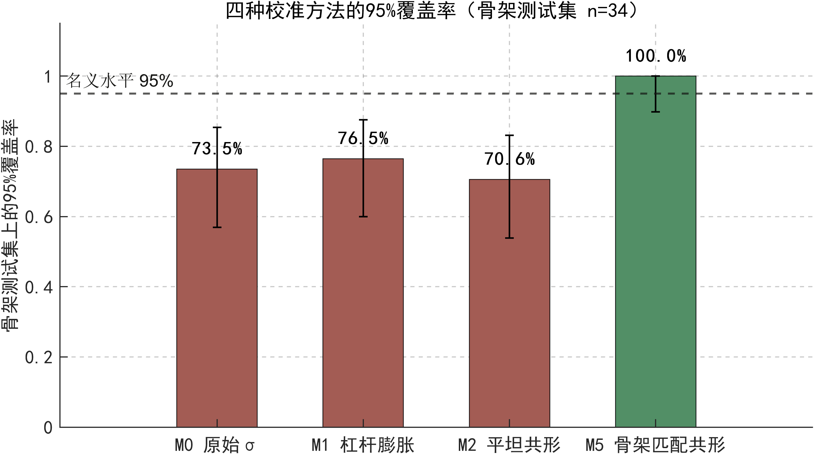
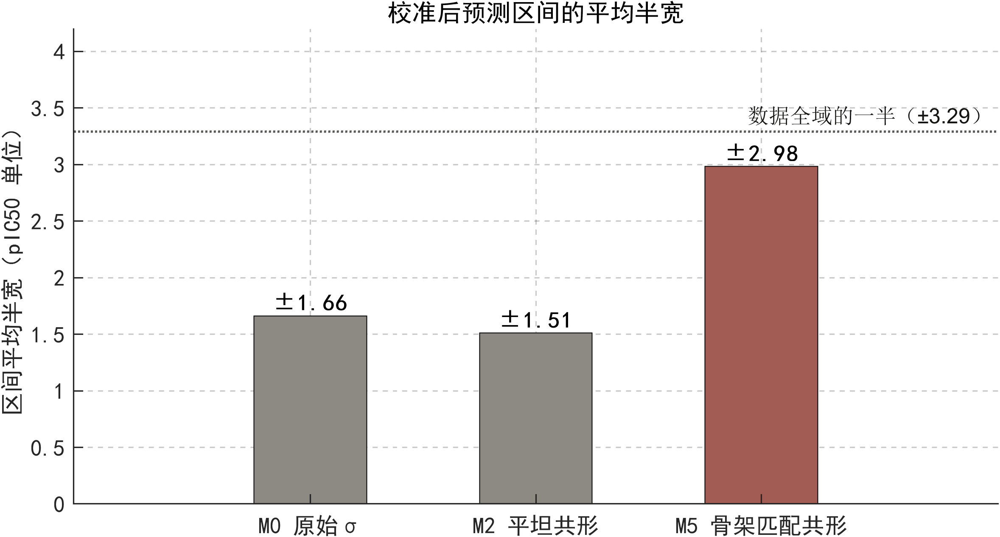
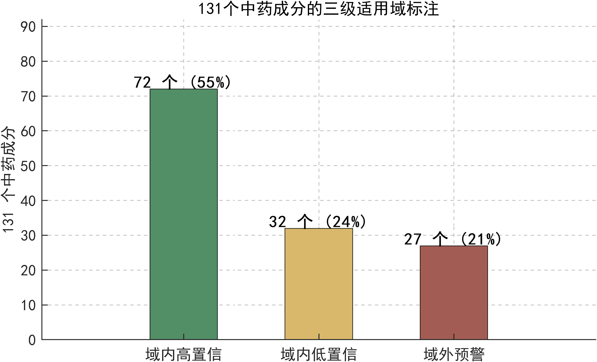
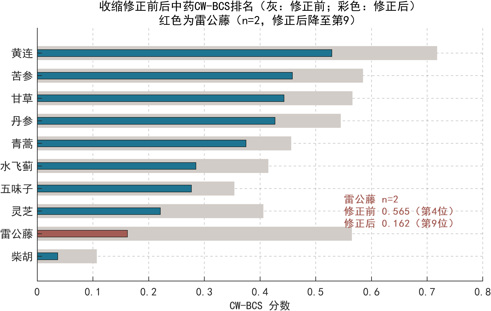

抗MASH天然药物虚拟筛选 · 结果报告
项目：基于贝叶斯图神经网络的抗MASH天然药物筛选（沈阳药科大学）｜建模数据：ChEMBL FXR 抑制剂 354 个化合物｜筛选库：10 味中药 131 个成分
数据来源：GEO GSE135251 / ChEMBL CHEMBL2047 / PubChem / RCSB PDB / KEGG（公共可溯源）｜核心统计经 Python 与 MATLAB 独立计算，结果一致｜日期：2026-08-23
0.790 → −0.610
模型 R²：随机划分 → 骨架划分。随机森林 0.845→0.047，XGBoost 0.811→−0.127，同样失效
73.5%
名义95%区间在骨架测试集上的实际覆盖率（n=34，Wilson CI 56.9–85.4%）
0.62–0.77
四种"用域内数据校准"方法均无法恢复覆盖率；根因：骨架位移与杠杆值无关
±2.98
唯一达标的校准（骨架匹配共形，覆盖率100%）所需区间半宽；数据全域仅±3.29，失去区分度
+0.585 / +0.269
σ与误差的秩相关：域内显著（p=0.0002）；域外不显著（p=0.124，n=34最小可检出|ρ|≈0.47）
72 / 32 / 27
131个成分三级标注：域内高置信/域内低置信/域外预警；排序依据仅取域内
结论
- 骨架划分下点预测全部失效，排序部分保留（ρ=0.48–0.64）。随机划分指标不能代表真实筛选表现。
- 不确定度σ仅在域内可靠。域外欠覆盖且无法事后修复：域内校准不达标，骨架匹配校准达标但区间宽度等于放弃筛选。
- 可执行交付：三级适用域标注 + 收缩修正排序 + 证据分级候选清单。湿实验入口：4个可购标样，HepG2脂变模型，预算约1500元。
边界声明：本报告全部结论为计算与文献证据，不构成疗效声称；模型预测结合活性，不区分激动/拮抗；不保证湿实验结果为阳性。
01模型审计：随机划分与骨架划分

同一数据、同一指标，仅划分方式不同。骨架划分下每个测试骨架均未在训练中出现。

σ与|误差|的秩相关。域内：+0.585（n=36，p=0.0002）；域外：+0.269（n=34，p=0.124）。
- 随机划分：R²=0.790、RMSE=0.723、ρ=0.768（n=36）。骨架划分：R²=−0.610、RMSE=1.290、ρ=0.533（n=34）。
- 三种模型（贝叶斯GNN/随机森林/XGBoost）骨架划分 R² 均 ≤0.05，失效与架构无关，属数据分布问题。
- σ的排序能力域内成立、域外样本量不足以判定。σ加权评分（w=1/(1+σ)）限定域内使用。
02校准实验：事后修复不可行

校准集=随机划分测试集(n=36)的三个方法均低于名义水平；M5以骨架验证折(n=36)校准，覆盖率达标。

M5平均半宽±2.98，数据全域±3.29。覆盖率与区分度不可兼得。
- 覆盖率：M0原始σ 0.735；M1杠杆膨胀σ 0.765；M2平坦共形 0.706；M3/M4（附SI）0.647/0.618；M5骨架匹配共形 1.000（Wilson下界0.899，满足预置≥0.90标准）。
- 失败根因已量化：骨架测试集平均杠杆0.0096 < 域内校准集0.0126，两组越界(h>0.0503)比例均为0%；杠杆与误差秩相关为−0.325/−0.189——杠杆指标检测不到该类外推。
- 处置：外推场景不做事后校准，改为事前标注。三级标注即为该结论的落地。
03筛选应用：三级标注与中药排序

131个成分按杠杆与σ双层规则标注。域外预警27个不进入优先队列。

收缩公式 s×n/(n+5)。k=3/5/8/12下前五名成员与次序均不变（附SI表S2）。
- 收缩修正后排序：黄连0.529 > 苦参0.458 > 甘草0.443 > 丹参0.427 > 青蒿0.375。雷公藤（n=2）由第4降至第9。
- 代表成分置信约束：黄连代表由低置信黄连碱改为高置信表小檗碱（CW-BCS 0.710）；苦参改为苦参酮E；水飞蓟11个成分全部域外预警，整药材标注。
- 排序语义：CW-BCS衡量三靶点面板上的结合覆盖倾向，不等于药效，不含协同判断。
04候选药物与湿实验方案
| 档位 | 化合物（来源） | 证据 | 获取 |
|---|
| 一等A | antcin K、antrodin B、antrocinnamomin F（樟芝） | 樟芝菌丝体全粉28例双盲临床试验（PMID 32657670，粉末级，不归因单体）+ 计算行；antrodin系列完整对接存档仅antrocinnamomin F | 有商品化标样 |
| 一等A | 积雪草酸（积雪草） | 直接文献：TGF-β/Smad与肝星状细胞抑制，体内外发表（PMID 35963324）；本面板无计算分 | 有标样 |
| 一等A | 小檗碱（黄连） | 已知活性分子，预测μ=8.21（域内高置信），兼阳性对照 | 有标样 |
| 一等B | 表小檗碱（黄连）、Derrone（甘草）、Anthraxin（白花蛇舌草）、土曲霉丁内酯类 | 纯计算：域内高置信或统一板块0.71–0.79 | 药材可得/可发酵 |
| 对照 | 07H239-A（真菌） | 来源论文即细胞毒（PMID 15387660）；菌株不在ATCC/NRRL | 不可购，仅作计算对照 |
| 排除 | Alisiaquinol（海绵）、Versicolamide B | 来源不可得 / 全合成18步收率1.8% | 不进湿实验 |
湿实验方案（C1）
| 项目 | 内容 |
|---|
| 首批化合物 | antcin K、antrodin B、积雪草酸、小檗碱 |
| 模型 | HepG2脂变：棕榈酸/油酸2:1，0.25 mM，诱导24–48 h |
| 浓度 | 0.1 / 1 / 10 / 30 μM；DMSO ≤0.1% |
| 读出与Hit标准 | TG定量（或BODIPY荧光）；Hit=较模型组下降≥30% 且 活力≥80% @ ≤10 μM |
| 对照 | 阳性：小檗碱10 μM、lovastatin 1 μM；阴性：等浓度DMSO |
| 预算/周期 | 约1500元（经费4000元内）；一学期；AMLN小鼠外置（需外部合作与追加经费） |
本报告数字均可溯源（附SI表S0：数字-来源文件对照）；核心统计量另经MATLAB独立复算一致：R²=0.7898/−0.6101，ρ=0.7681/0.5328，σ相关=+0.5853/+0.2688，覆盖率=1.000/0.735，共形q=1.5107（results/v6/matlab_verify.csv）。湿实验阳性与否不能预先保证；阴性结果用于修正计算管线。
05下一步安排
| 事项 | 周期 | 内容 | 验收标准 |
|---|
| 1. 结题文书 | 2周 |
按申报书契约口径撰写结题报告（主线=v1三项成果：R²=0.790超契约32%、131成分四维表、开源框架；v2–v5作延伸附录）；同步准备答辩问答（三题：两次方向演进依据、骨架划分R²=−0.61如何解释、收缩修正后的新排序） |
结题报告与申报书预期成果逐项对应；无"管线空白""单体RCT"等已更正表述 |
| 2. 湿实验执行 | 1学期 |
采购4个标样（antcin K、antrodin B、积雪草酸、小檗碱）→ HepG2脂变模型四点浓度 → 按Hit标准判定（TG降≥30%且活力≥80%@≤10μM）；预算约1500元 |
至少1个阳性Hit，或全部阴性时的明确阴性结论（用于修正计算管线，同样计入成果） |
| 3. 结果回流 |
湿实验后1个月 |
阳性Hit：qPCR验证FASN/SQLE（脂）与COL1A2（纤维化）模块，候选升级、启动组合实验设计；阴性：作为外部校准数据回填模型，修订三级标注阈值 |
每个化合物有明确判定（活性/非活性/需重复）；模型参数或标注规则完成一次修订 |
| 4. 论文投稿 | 与1–2并行 |
补全作者名单/通讯邮箱/经费号 → 代码与数据Zenodo存档、回填DOI → 中文稿投药学或计算化学类中文核心；若转投英文刊（ACS Omega），需将本轮F1/F9/F10等修正回填英文版 |
完成投稿提交；SI表S0随稿提交 |
| 5. 后续研究 | 视2的结果 |
v2十靶点QSAR逐靶补骨架划分验证（无骨架验证的靶点不得输出域外排序）；COCONUT成分归属硬过滤重扫；MARC1重组酶活试验作为遗传锚定靶点的实验出口；跟踪OLX75016与denifanstat III期数据 |
每季度一次外部证据核对记录；各靶点有骨架划分R²与覆盖率 |
- 顺序不可调换的一项：湿实验（事项2）先于任何扩展计算（事项5）。本项目当前最大缺口是没有外部实验数据，继续加计算只会重复"计算验证计算"。
- 责任与资源：事项1、4由课题组文书执行；事项2需细胞房排期与耗材采购；事项5中MARC1酶活与小鼠实验均需外部合作，不列入大创周期承诺。
进度依据：圆桌裁决书行动清单（roundtable/judge_verdict.md 第六节）B/C档 + 课题组决策纪要。A档（榜单重建、报告更正、收缩修正、候选重排）已于2026-08-23完成。